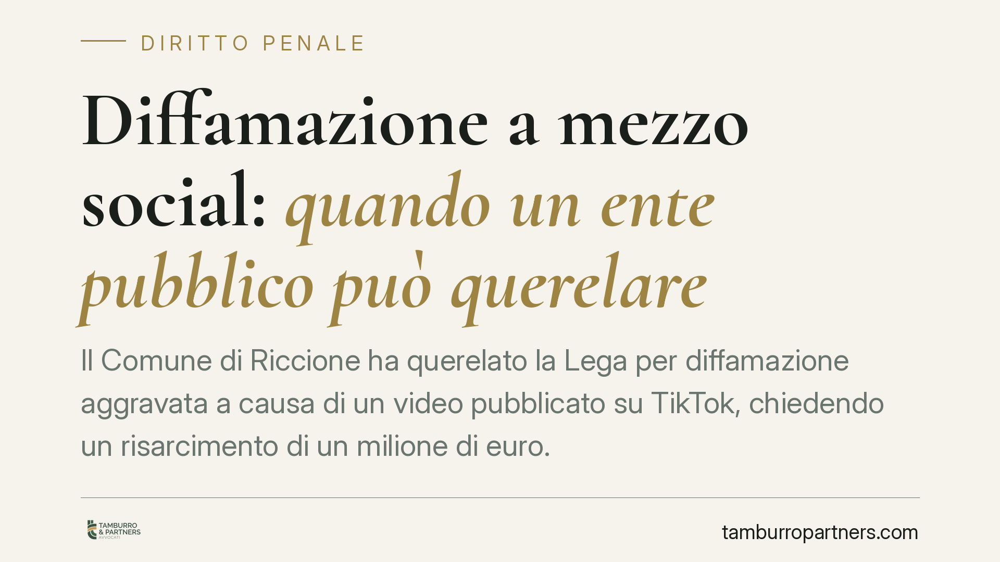

Diffamazione a mezzo social: quando un ente pubblico può querelare
Il Comune di Riccione ha querelato la Lega per diffamazione aggravata a causa di un video pubblicato su TikTok, chiedendo un risarcimento di un milione di euro. La vicenda riporta al centro un tema tecnico delicato: se e come un ente pubblico possa reagire penalmente a contenuti diffusi online che ne ledono la reputazione istituzionale.

Il fatto
Il Comune di Riccione ha presentato querela contro la Lega per diffamazione aggravata, ritenendo denigratorio un video diffuso sulla piattaforma TikTok. La richiesta risarcitoria ammonta a un milione di euro, che l'amministrazione ha dichiarato di voler destinare a famiglie in difficoltà.
Al di là dell'aspetto politico, il caso solleva questioni giuridiche concrete: la configurabilità della diffamazione quando l'offesa è veicolata da un social network, l'aggravante legata alla diffusione e il tema, meno lineare, della tutela dell'onore riferito a un ente collettivo.
Inquadramento normativo
La diffamazione è prevista dall'art. 595 del codice penale e punisce chi, comunicando con più persone, offende la reputazione di un soggetto assente. Il terzo comma introduce un'aggravante quando l'offesa è arrecata "col mezzo della stampa o con qualsiasi altro mezzo di pubblicità": in questa categoria rientrano pacificamente i contenuti pubblicati sui social network, per l'ampia e incontrollata platea che possono raggiungere.
Un video su TikTok, quindi, integra il mezzo di pubblicità richiesto dall'aggravante. La pena base è la reclusione o la multa, ma nell'ipotesi aggravata i limiti edittali salgono in modo significativo.
Più complesso è il profilo soggettivo. Secondo un orientamento consolidato, un ente pubblico non è titolare del bene giuridico dell'onore nel senso proprio del termine. La reputazione istituzionale, tuttavia, può essere tutelata in via civile, e le persone fisiche che compongono o rappresentano l'ente - il sindaco, gli amministratori - possono agire quando l'offesa colpisce direttamente la loro figura.
La Cassazione, con la sentenza n. 36931 del 7 settembre 2023, ha ribadito la distinzione tra critica lecita e diffamazione: la libertà di critica politica è ampia, ma incontra un limite nella continenza espressiva. Quando il contenuto trascende la valutazione dei fatti e si traduce in attacco gratuito alla dignità personale, la scriminante del diritto di critica non opera.
Implicazioni pratiche
Per chi produce contenuti - politici, giornalisti, comunicatori, ma anche semplici utenti - il confine tra critica e offesa non dipende dai toni accesi, bensì dal rispetto di tre criteri: verità del fatto narrato, interesse pubblico alla notizia e continenza, cioè misura nel linguaggio.
Un video ironico o polemico resta lecito finché argomenta su fatti; diventa penalmente rilevante quando degrada in insulto personale privo di aggancio a circostanze verificabili.
Per chi ritiene di essere stato diffamato, invece, valgono alcune coordinate operative. La querela va proposta entro tre mesi dalla conoscenza del fatto: è un termine di decadenza, oltre il quale l'azione penale non è più esercitabile. È inoltre essenziale documentare il contenuto contestato prima che venga rimosso.
Quando l'offesa colpisce un'istituzione, occorre distinguere con precisione chi agisce e a quale titolo: la persona fisica lesa nella propria reputazione, oppure l'ente in sede civile per il danno all'immagine. Confondere i due piani indebolisce la posizione.
Cosa fare in concreto
- Conservate la prova. Acquisite screenshot, URL e, dove possibile, una copia autenticata del contenuto tramite servizi di conservazione digitale o perizia, prima che venga cancellato.
- Verificate i termini. Calcolate con attenzione i tre mesi per la querela, decorrenti dal momento in cui avete avuto conoscenza effettiva del contenuto offensivo.
- Distinguete i soggetti lesi. Individuate se l'offesa colpisce una persona fisica, l'ente o entrambi, e scegliete di conseguenza la sede penale, civile o congiunta.
- Valutate la continenza. Prima di pubblicare un contenuto critico, verificate che poggi su fatti veri e di interesse pubblico e che il linguaggio resti nei limiti della misura.
- Fatevi assistere per tempo. Una consulenza preventiva sulla qualificazione del contenuto evita sia querele infondate sia rinunce a tutele legittime.
Osservazione conclusiva
Il caso Riccione conferma una tendenza: le controversie sull'onore si spostano sempre più sui social, dove la diffusione è immediata e capillare. Questo amplifica sia il danno potenziale sia la rilevanza dell'aggravante di cui all'art. 595, terzo comma. La linea di confine resta però quella di sempre - fatto, interesse, misura - e va valutata caso per caso.
---
*Contributo informativo a cura di Tamburro & Partners - Avv. Giuseppe Tamburro. Non costituisce parere legale.*
Ogni condominio ha una storia a sé.
Se gestisci un'amministrazione e vuoi un confronto su una specifica questione condominiale, scrivi allo studio. Ti rispondiamo entro un giorno lavorativo.